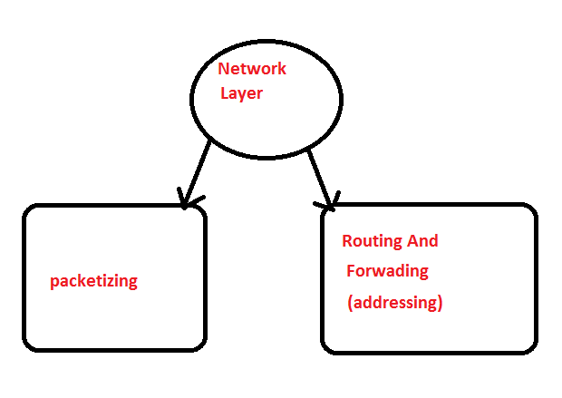

Network Layer

Packetizing
- The process of encapsulating the data received from upper layers of the network(also called as payload) in a network layer packet at the source and decapsulating the payload from the network layer packet at the destination is known as packetizing. The source host adds a header that contains the source and destination address and some other relevant information required by the network layer protocol to the payload received from the upper layer protocol, and delivers the packet to the data link layer.
- The destination host receives the network layer packet from its data link layer, decapsulates the packet, and delivers the payload to the corresponding upper layer protocol. The routers in the path are not allowed to change either the source or the destination address. The routers in the path are not allowed to decapsulate the packets they receive unless they need to be fragmented.
Routing And Forwading
- In a network, there are a number of routes available from the source to the destination.
- The network layer specifies has some strategies which find out the best possible route.
- There are a number of routing protocols which are used in this process and they should be run to help the routers coordinate with each other and help in establishing communication throughout the network
.
- Forwarding is simply defined as the action applied by each router when a packet arrives at one of its interfaces.
- When a router receives a packet from one of its attached networks, it needs to forward the packet to another attached network (unicast routing) or to some attached networks(in case of multicast